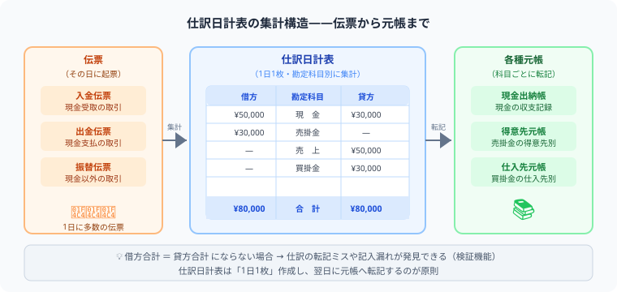

仕訳日計表の書き方
伝票から集計するステップを図解で完全解説
- 仕訳日計表は「伝票を仕訳に直す→科目ごとに集計」の2ステップで完成する
- 入金伝票は（借）現金、出金伝票は（貸）現金、振替伝票はそのまま仕訳——これだけ覚えればOK
- 借方合計＝貸方合計になれば仕訳日計表は完成——不一致は必ず転記ミス
- 完成した仕訳日計表から総勘定元帳へ転記するのが最終ステップ
こんにちは、大谷です！
実は、今回紹介する「仕訳日計表」ですが、僕が初めて見たとき、「え、結局ただ伝票を集計して表にするだけの単純作業でしょ？」と正直ナメてかかっていました（笑）。でも実際に解いてみると、入金伝票・出金伝票・振替伝票がごちゃ混ぜになった状態から、勘定科目ごとに正確に拾い集めて借方合計＝貸方合計まで一致させるのは、思っていた以上に骨が折れるパズルでした。
でも本質を理解した瞬間、この作業が実務ではとんでもない効率化の武器だと気づいたんです。伝票が100枚あっても、1枚ずつ元帳へ転記していたら日が暮れます。でも仕訳日計表を経由すれば、勘定科目ごとに「たった1回」の合計転記で済んでしまう。この「個別転記→合計転記」への発想の転換こそが、仕訳日計表の面白さです。
今回は、このパズルをゲーム感覚で攻略できるよう、図解と一緒に僕なりの解き方をお届けします！
また、記事の末尾のほうにある【いいねボタン】をポチッと押してもらえると、めちゃくちゃ嬉しいです！
❓ 仕訳日計表とは？——その日の全伝票を勘定科目ごとに集計した一覧表

企業では毎日たくさんの取引が発生し、伝票が大量に起票されます。その日に起票されたすべての伝票を集計して1枚の表にまとめたものが仕訳日計表です。
- 一日の取引量・金額を一目で把握できる
- 伝票の記入ミスや集計漏れを発見できる（借方合計＝貸方合計で検証）
- 仕訳日計表から元帳（得意先元帳・仕入先元帳など）への転記に使う
仕訳の借方・貸方が同額になるルールと同じです。合計が合わない場合は集計ミスや伝票の見落としがあります。
なぜ仕訳日計表を使うのか——伝票ごとではなく日計表で元帳転記をまとめる理由
3伝票制では、伝票1枚ごとに総勘定元帳へ転記すると作業量が膨大になります。仕訳日計表を使えば、1日分の伝票をまとめて集計し、元帳へ合計転記できるため大幅に効率化できます。
個別転記（仕訳日計表なし）：伝票が100枚あれば100回転記が必要
合計転記（仕訳日計表あり）：勘定科目ごとに集計して1回だけ転記すればよい
→ 大企業ほど1日の取引が多いため、仕訳日計表による合計転記が実務・試験の両方で重要になります。
📝 例題——6枚の伝票から仕訳日計表を完成させる
2026年6月1日に次の伝票が起票された。この伝票から仕訳日計表を作成しなさい。
起票された伝票（6月1日分）——入金・出金・振替の3種類が混在している
✏️ 解き方：2ステップで完成——伝票を仕訳に変換→勘定科目ごとに集計
入金・出金・振替の各伝票をすべて仕訳の形に並べる（上の表がそれ）
同じ勘定科目が複数の伝票に登場する場合は合算する
STEP 2：勘定科目ごとに借方・貸方を集計する
完成した仕訳日計表——借方合計＝貸方合計で確認完了
| 借方 | 勘定科目 | 貸方 |
|---|---|---|
| 23,000 | 現金 | 5,000 |
| 10,000 | 売掛金 | 3,000 |
| — | 当座預金 | 20,000 |
| 1,000 | 仕入 | — |
| 4,000 | 水道光熱費 | — |
| — | 売上 | 10,000 |
| 38,000 | 合 計 | 38,000 |
借方：23,000＋10,000＋1,000＋4,000＝38,000
貸方：5,000＋3,000＋20,000＋10,000＝38,000
合計が合えば集計完了。合わない場合はどこかの伝票の記入漏れや計算ミスを確認する。
📖 試験でよく一緒に出る：元帳への転記——日計表の合計を1行で総勘定元帳へ転記する
試験では仕訳日計表の作成と同時に、得意先元帳（売掛金明細）や仕入先元帳（買掛金明細）への転記を求める問題が出ます。
元帳への転記自体は補助簿の知識がそのまま使えます。仕訳日計表の金額を見ながら、各取引先の口座に金額を写すだけです。
仕訳日計表の勘定科目の記載順は問題ごとに異なります。答案用紙の勘定科目欄が空欄になっていれば自分で書き、あらかじめ印刷されていればその順番に従います。どちらの形式にも対応できるようにしておきましょう。
📋 まとめ：仕訳日計表 早見表
この記事が少しでも参考になったら……
仕訳日計表は「科目ごとに拾い集めて足し算し、借方＝貸方で答え合わせする」パズルだと気づけば、伝票が何枚あっても怖くありません。
僕の執筆のモチベーション維持のために、この下にある【いいねボタン】をポチッと押してもらえると、めちゃくちゃ嬉しいです！